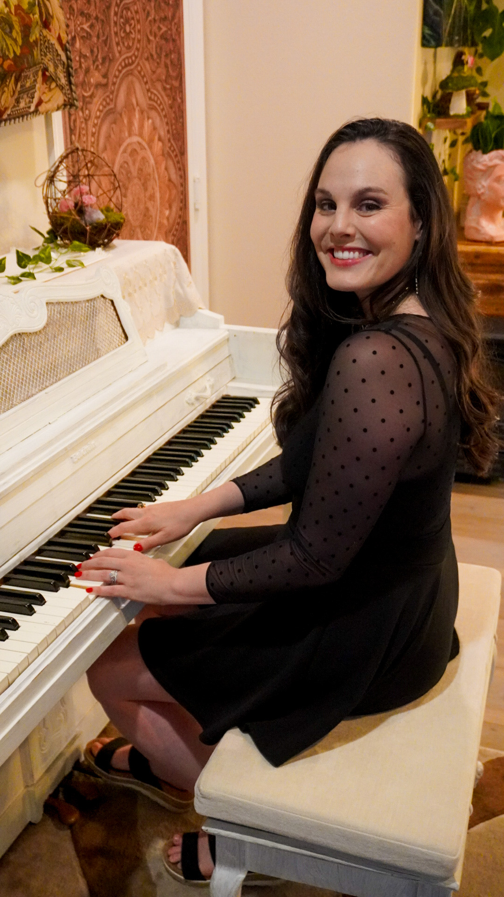

Kelsey Mira has been teaching music lessons since 2010 and takes clients out of her home in Ladera Ranch. She works with both in-person and online students. Kelsey teaches voice and piano lessons—she also specializes in working with vocal talents in the industry, where students can record professional audio in her studio for their auditions: singing and voice acting jobs.

Kelsey had a professional vocal coach tell her she was never to sing anything but Opera or she would damage her voice, but Kelsey went on to study with another coach who believed in cross training the voice.
Kelsey then begn working with renowned Voice Pathlogist, Dr. Wendy LeBorgne, who also believed in cross training the voice and gave Kelsey tools to safely and effectively sing both opera and Led Zeppelin covers with her band. Kelsey implements these tools for healthy singing in her lessons with vocal students.
Kelsey is able to work in a niche market singing ethereal vocals for video games and soundtracks due to her ability to effortlessly transition from a classical style to straight tone singing. “I want my students to feel empowered and understand how to use their voice, spanning many different styles of singing.” Kelsey encourages students to learn how to read music and understand sight reading (a skill she frequently relies on during studio sessions).
In music lessons students can expect to begin class with a warm-up exercise, then move onto practicing their repertoire. In lessons with Kelsey, there’s always room for fun music games as well! Kelsey believes learning can be fun and students—especially young children—can enjoy lessons and feel inspired to practice at home. Kelsey’s approach is gentle, with heavy encouragement and honest feedback.
Studio
Reviews
My daughter has been taking voice and songwriting lessons with Kelsey Mira. Mira is fun, encouraging, and patient. She is a great teacher as well as performer. Her experience and talent as a teacher has been invaluable. My daughter and Mira have recorded and released a song and it has been such an educational and exciting experience that has been well received. I highly recommend Mira for voice and songwriting lessons.
- Diane Mehbod Wenzel
I took lessons with her for awhile and In that time I learned sooo much about my voice. I was fairly confident in it before that, but wow did I have a lot to learn. She is amazing, by giving honest feedback paired with her positivity, I grew a bunch as a songwriter, singer, and musician as a whole. Kelsey Mira is awesomeee. Would 11/10 recommend to anyone wanting to get into singing. Also for experienced singers too!
- Jake Nelson
Absolutely amazing, not only did you give my daughter the gift of reading, creating, and enjoying music on new levels- you helped her get a role in her first real play by teaching her how to use her voice to touch people.
You didn’t stop there with your unique and ground-breaking talents, you gave her confidence in school by applying your music classes with her struggles in school. Your ability to go above and beyond did not stop there! You not only taught a song that would help her with her times tables, but you let her help you create the song.
This set the tone for her to do this herself, with confidence & creativity, in other subjects and struggles as well!!
Learning all those skills as a third grader will give her life skills ahead of the rest for her entire life!
-Roya
Kelsey is a talented gal, who loves sharing that talent with her students. She has an approach to her students that is tailored to each individual. You will love her!
-Amy Elekes Sefton
I began taking lessons with Mira back in 2016. I entered as a vocal student who had grown up not taking vocal lessons or classes. I did not receive vocal lessons until my junior year of college. In 2016 a friend recommended Mira for voice lessons! Her lessons have been extremely valuable to my progression as a vocalist and songwriter! She ensured that I was instilled with the proper knowledge to be able to make improvements with my voice! Before taking lessons with Mira I quiet often sang out of key and had poor vocal technique. Being able to sing on key seemed ambiguous but with her guidance in time I have grown much more confident in my ability to sing! Mira is down to earth, honest, encouraging and will bring out the vocalist and songwriter in you.
-Jake Judy
Kelsey is the best teacher I have ever had! She is so so talented and is just the nicest person I have ever met. With her knowledge in music theory and vocal techniques, I was able to find my sound and gain the confidence to start writing my own music. Kelsey is not only an amazing teacher, but she is also a beautiful and successful songwriter who inspires and encourages young artists like me who have a dream.
-Lakshmi V
I would highly recommend Mira as a vocal instructor. She taught me music theory, developed my sight singing skills, and worked on singing rock, pop, and classical songs. Not only is she extremely talented and knowledgable, but she is very encouraging as well. It is clear that she wants her students to succeed. I learned so much in the years that I took lessons from Kelsey Mira and grew so much as a vocalist.
-Haley Dardis
She has been working with my daughter for several years. She is amazingly talented, kind, hard working and has really helped my daughter grow as a vocalist. She is great at finding new and challenging songs for her, and is an incredibly strong and supportive coach. My daughter loves working with her.
-Leila Owens
I have been lucky enough to have taken lessons from Mira for 5 years now, and I would not trade that experience for any other instructor. Her raw talent combined with her knowledge of music theory was an environment that really allowed me to flourish as a vocalist. She helped me accomplish things I really didn’t think I could do. Her kindness and support is like no-other. I cannot say enough good things; take a lesson from her and change your life!!!!
-Zoë Sefton
Kelsey Mira is a dream come true. All three of my kids have taken lessons from her. My son, who was 17 at the time, says he learned more from her in one lesson than all the teachers he’d had previously. My girls, ages 16 and 11, both have a love of broadway music. Kelsey Mira always encourages them and nurtures them during each lesson. I hear the girls singing constantly, practicing what Mira taught them. You can tell that Kelsey Mira genuinely loves what she does and loves working with our kids. If you are looking for a vocal teacher, stop looking, because you can’t do better than Mira!!
-Joel Nelson
Kelsey Mira is a patient, fun, knowledgeable teacher. Her experience and talent is invaluable. She is gifted as both a teacher and a performer. I highly recommend her for voice and songwriting lessons.
-D.W.